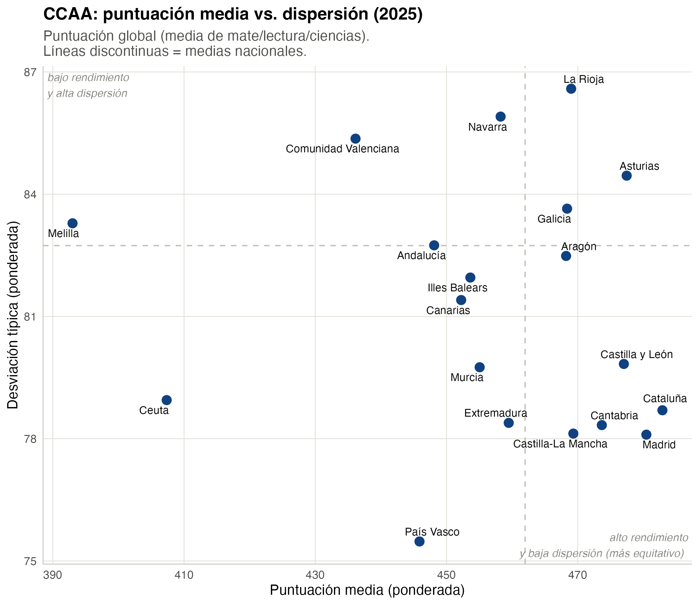
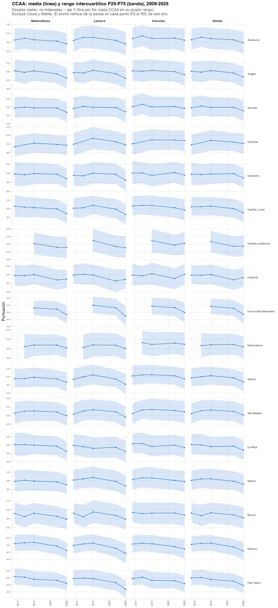
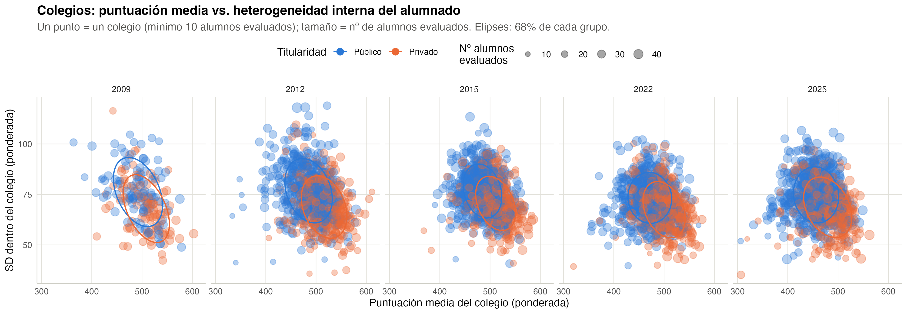
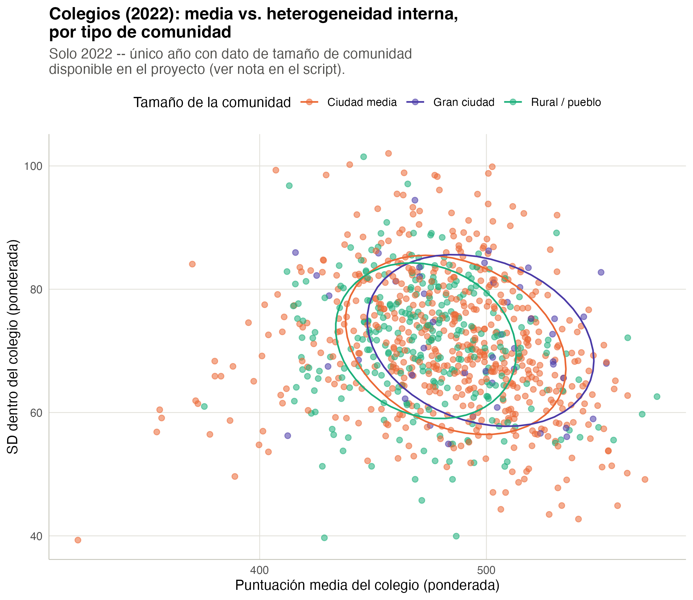

| Año | N | Media | SD | P10 | P90 | P90-P10 |
|---|---|---|---|---|---|---|
| Matemáticas | ||||||
| 2009 | 25,078 | 483.6 | 91.2 | 362.8 | 599.2 | 236.3 |
| 2012 | 24,218 | 488.8 | 87.6 | 374.9 | 602.8 | 227.9 |
| 2015 | 32,330 | 485.4 | 84.7 | 373.8 | 593.1 | 219.3 |
| 2022 | 30,800 | 473.1 | 82.0 | 362.2 | 579.1 | 216.9 |
| 2025 | 29,966 | 457.4 | 80.5 | 348.6 | 561.0 | 212.4 |
| Lectura | ||||||
| 2009 | 25,078 | 482.9 | 88.7 | 364.4 | 591.3 | 226.9 |
| 2012 | 24,218 | 492.3 | 91.8 | 371.2 | 604.9 | 233.7 |
| 2015 | 32,330 | 496.5 | 88.9 | 377.2 | 607.0 | 229.7 |
| 2022 | 30,800 | 474.3 | 88.8 | 354.9 | 586.3 | 231.5 |
| 2025 | 29,966 | 451.4 | 87.6 | 329.8 | 561.1 | 231.3 |
| Ciencias | ||||||
| 2009 | 25,078 | 489.6 | 89.2 | 371.5 | 600.4 | 228.8 |
| 2012 | 24,218 | 498.8 | 85.7 | 387.7 | 608.1 | 220.4 |
| 2015 | 32,330 | 494.1 | 88.8 | 375.0 | 607.5 | 232.6 |
| 2022 | 30,800 | 484.5 | 84.4 | 371.5 | 592.9 | 221.4 |
| 2025 | 29,966 | 477.1 | 88.6 | 356.0 | 591.1 | 235.0 |
1 Dispersión de resultados: no solo medias
Las dos secciones siguientes de este libro (migración ampliada y heterogeneidad de composición socioeconómica, capítulos 2 y 3) preguntan qué explica la dispersión de resultados. Antes hace falta establecer un hecho descriptivo básico: ¿cómo ha evolucionado esa dispersión en sí misma, de 2009 a 2025, no solo la media? La media ya está descrita en pisa-espana-ccaa; aquí se añade la otra mitad de la foto.
Dos métricas complementarias (ver README.md): la SD ponderada (coherente con la descomposición de varianza que se usa más abajo) y el rango P90-P10 ponderado (más robusto a valores atípicos, en la misma escala de puntos que la media). Todas las cifras están ponderadas por stu_wgt; no se usan pesos replicados BRR-Fay (mismo criterio que pisa-espana-ccaa).
1.1 1.1 Media y dispersión a nivel nacional
En matemáticas, como referencia (los otros dos dominios se mueven de forma parecida): la SD pasa de 91.2 puntos en 2009 a 80.5 en 2025, y el P90-P10 de 236.3 a 212.4. Es decir: la dispersión de resultados ha bajado, de forma bastante consistente, en el mismo periodo en que ha bajado la media (la caída de la media 2022-2025 en particular ya es conocida de pisa-espana-ccaa). No hay, a nivel nacional, una historia de “la media baja pero la desigualdad de resultados sube” – las dos cosas bajan juntas. Esto no dice nada todavía sobre POR QUÉ baja la dispersión (esa es la pregunta de los capítulos 2 y 3); aquí solo se deja establecido que baja.
1.2 1.2 ¿De dónde viene la dispersión? Entre colegios vs. dentro de cada colegio
La ley de la varianza total permite separar cuánta dispersión de resultados es entre colegios (unos colegios rinden mejor que otros de media) y cuánta es dentro de cada colegio (alumnado de un mismo centro con resultados muy distintos entre sí) – un complemento puramente descriptivo al VPC de los modelos jerárquicos de pisa-espana-ccaa, no un sustituto.
| Año | % varianza entre-colegios |
|---|---|
| Matemáticas | |
| 2009 | 22.9% |
| 2012 | 21.1% |
| 2015 | 15.5% |
| 2022 | 21.0% |
| 2025 | 19.5% |
| Lectura | |
| 2009 | 24.4% |
| 2012 | 21.4% |
| 2015 | 15.1% |
| 2022 | 18.8% |
| 2025 | 21.3% |
| Ciencias | |
| 2009 | 23.5% |
| 2012 | 20.4% |
| 2015 | 16.1% |
| 2022 | 17.3% |
| 2025 | 20.1% |
En matemáticas, el porcentaje de la varianza que es entre-colegios pasa de 22.9% en 2009 a 19.5% en 2025 (con un mínimo notable en 2015, del 15.5%). La lectura no es monótona año a año, pero la tendencia de fondo es de ligero descenso: España no se mueve hacia una red escolar más segregada en resultados, más bien lo contrario.
Separando de dónde viene la caída de dispersión nacional (sección 1.1):
| Año | Nº colegios | SD entre-colegios | SD dentro-colegio (media) |
|---|---|---|---|
| Matemáticas | |||
| 2009 | 856 | 43.8 | 79.9 |
| 2012 | 845 | 40.2 | 78.6 |
| 2015 | 968 | 33.4 | 76.9 |
| 2022 | 951 | 37.8 | 71.8 |
| 2025 | 943 | 36.0 | 71.5 |
| Lectura | |||
| 2009 | 856 | 43.9 | 76.3 |
| 2012 | 845 | 42.5 | 80.6 |
| 2015 | 968 | 34.6 | 80.7 |
| 2022 | 951 | 38.7 | 77.8 |
| 2025 | 943 | 41.0 | 76.9 |
| Ciencias | |||
| 2009 | 856 | 43.4 | 76.4 |
| 2012 | 845 | 38.7 | 76.4 |
| 2015 | 968 | 35.7 | 80.2 |
| 2022 | 951 | 35.4 | 75.2 |
| 2025 | 943 | 40.2 | 78.2 |
En matemáticas, la SD entre-colegios baja de 43.8 a 36, y la SD dentro-colegio de 79.9 a 71.5. Las dos bajan, pero la caída dentro-colegio es la que domina en términos absolutos (es, con diferencia, el componente más grande de la varianza total en todos los años – en torno al 75-85% de ella, coherente con el ~15-23% “entre-colegios” de la tabla anterior). Dicho de otro modo: la mayor parte de por qué ha bajado la dispersión de resultados en España es que el alumnado DENTRO de un mismo colegio se ha ido pareciendo más entre sí en su rendimiento, no que los colegios se hayan igualado más entre ellos (aunque esto último también ha ocurrido, en menor medida).
1.3 1.3 Por titularidad: los colegios privados, sistemáticamente menos dispersos por dentro
| Año | Titularidad | Nº colegios | SD dentro-colegio (media) |
|---|---|---|---|
| Matemáticas | |||
| 2009 | Público | 106 | 83.8 |
| 2009 | Privado | 100 | 76.3 |
| 2012 | Público | 505 | 81.4 |
| 2012 | Privado | 333 | 74.1 |
| 2015 | Público | 581 | 78.6 |
| 2015 | Privado | 330 | 74.2 |
| 2022 | Público | 585 | 73.7 |
| 2022 | Privado | 352 | 68.5 |
| 2025 | Público | 597 | 73.6 |
| 2025 | Privado | 323 | 67.4 |
| Lectura | |||
| 2009 | Público | 106 | 80.1 |
| 2009 | Privado | 100 | 70.4 |
| 2012 | Público | 505 | 84.4 |
| 2012 | Privado | 333 | 74.8 |
| 2015 | Público | 581 | 83.1 |
| 2015 | Privado | 330 | 76.5 |
| 2022 | Público | 585 | 80.0 |
| 2022 | Privado | 352 | 73.9 |
| 2025 | Público | 597 | 78.9 |
| 2025 | Privado | 323 | 73.1 |
| Ciencias | |||
| 2009 | Público | 106 | 79.4 |
| 2009 | Privado | 100 | 71.7 |
| 2012 | Público | 505 | 79.3 |
| 2012 | Privado | 333 | 71.8 |
| 2015 | Público | 581 | 82.5 |
| 2015 | Privado | 330 | 76.6 |
| 2022 | Público | 585 | 77.1 |
| 2022 | Privado | 352 | 72.0 |
| 2025 | Público | 597 | 80.3 |
| 2025 | Privado | 323 | 74.1 |
Aviso de cobertura 2009: public_private tiene ~76% de valores ausentes en 2009 (ver README.md); el desglose por sector de esa edición debe leerse con cautela extrema (base efectiva ~24% de la muestra). 2012 en adelante es la lectura fiable.
De 2012 en adelante, el patrón es consistente en los tres dominios: los colegios privados tienen, año tras año, una SD dentro del colegio más baja que los públicos – en matemáticas, una diferencia de entre 5 y 7 puntos en todas las ediciones desde 2012. Las dos series bajan en paralelo (ambas reflejan la caída nacional de la sección 1.1), así que la brecha entre sectores no se cierra ni se amplía con claridad, pero es persistente: el alumnado dentro de un colegio privado se parece más entre sí, en resultados, que el alumnado dentro de un colegio público, en todas las ediciones fiables. Esto es coherente con lo que se ve en el capítulo 3 sobre heterogeneidad de composición socioeconómica por sector: los colegios privados también son más homogéneos por dentro en HISEI (ver sección 3.2) – una composición interna más homogénea es consistente con (aunque no prueba por sí sola) una dispersión de resultados interna también más baja.
A nivel entre-colegios por sector (¿los colegios públicos se parecen más entre sí, o los privados entre sí?) el patrón es menos limpio – no hay una diferencia sistemática entre sectores en qué tan dispersas están las medias de sus propios colegios entre sí; ver data/tbl_dispersion_entre_colegios_sector.rds para el detalle completo por año y dominio.
1.4 1.4 Media vs. dispersión, en el mapa

Foto fija de 2025: las CCAA en el cuadrante inferior derecho (alto rendimiento, baja dispersión) combinan buena media con relativa equidad interna; las del cuadrante superior izquierdo, lo contrario. Las líneas discontinuas marcan la media y la SD nacionales.

La rejilla completa (17 CCAA, excluyendo Ceuta y Melilla por tamaño muestral, x 4 materias incluida la puntuación global) permite ver CCAA por CCAA si la banda del rango intercuartílico se estrecha o se ensancha con el tiempo – el ancho vertical de la banda en cada punto ES el RIC de ese año, en la misma escala que la media (no son dos ejes distintos, ver nota de diseño en R/03_grafico_media_dispersion.R).

A nivel de colegio (un punto = un colegio, tamaño = nº de alumnos evaluados), las elipses de público/privado (68% de cada grupo) dejan ver lo mismo que la tabla 1.3 de forma visual: la nube de colegios privados está sistemáticamente más a la izquierda del eje Y (menor SD interna) que la de los públicos, año tras año.

Este último panel solo existe para 2022 – es la única edición con fichero de centros disponible en el proyecto (ver aviso en R/03_grafico_media_dispersion.R). Con esa salvedad, no hay una separación tan nítida por tamaño de comunidad como la que hay por titularidad: rural/ciudad media/gran ciudad se solapan bastante más entre sí que público/privado.